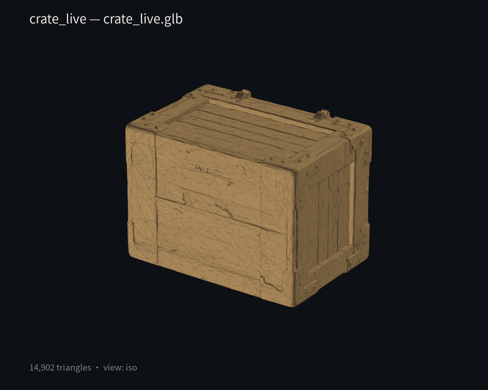
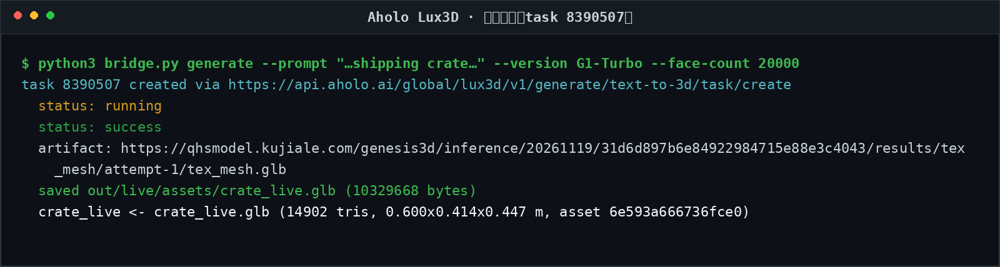
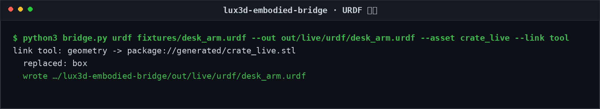
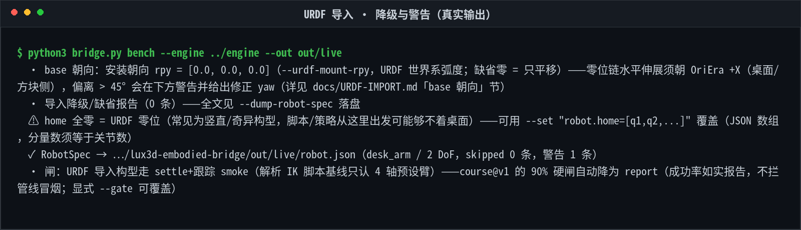
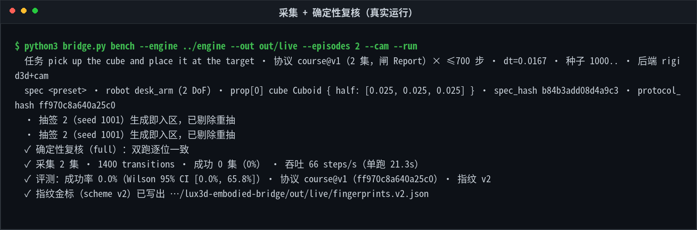
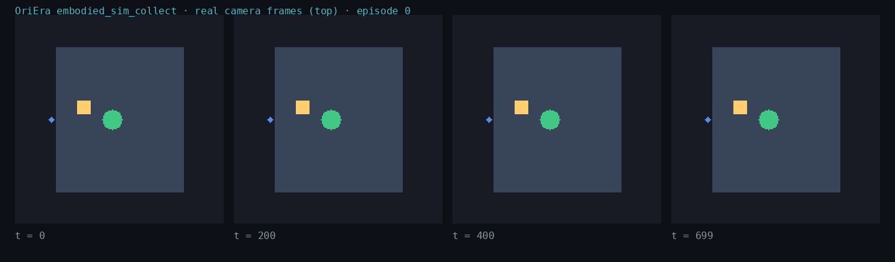
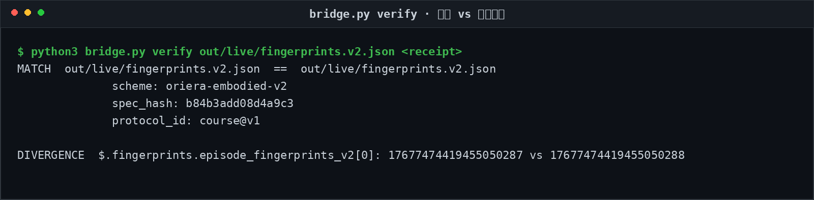
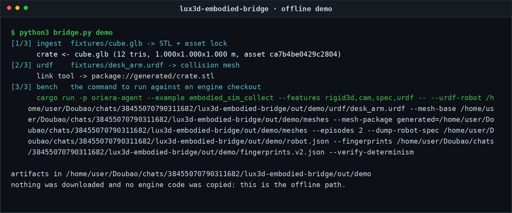
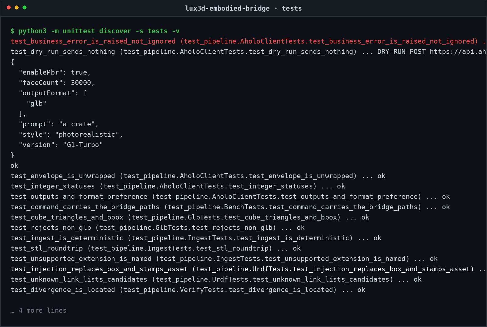

Lux3D 生成的物件

GLB 原始网格：14,902 三角面，包围盒 0.600 × 0.414 × 0.447 m。由本仓库自己的解析器读出，不是查看器截图。
转台：同一份三角面数据转 360°，8 秒循环。重新渲染：--turntable 24。
如果录视频时想现场生成，先跑 python3 bridge.py generate --prompt "…" --version G1-Turbo --face-count 20000，实测约 10 分钟（含排队），别现场等。
真任务：一句 prompt → 一个文件

创建即返回 taskId，轮询到 status=3，从 outputs[0].content 取下载地址，立刻落盘再入账（URL 只有约 2 小时）。
身份写进引擎真正读取的那份描述

<collision> 被换成 package://generated/crate_live.stl，asset id 以注释形式留在同一行上下文里——改一个字节，id 就变。
真引擎跑起来

导入阶段：2 DoF、skipped 0、警告 1 条（home 全零）。引擎不会静默改你的模型，它把出口写在屏幕上。

采集阶段：2 集 · 1400 transitions · 0% 成功率 —— 如实报告；4 轴预设外的构型，硬闸自动降到 report。
episode 0 的相机帧（700 帧 @30fps，真实输出，未插帧）。橙色方块是任务里的 cube，绿点是目标区。

同一条 episode 的四个时刻：机器人在左，方块在台面，目标在右。
回执：一样，和不一样

上半是两次跑逐位相同；下半是把一份回执故意改一位，工具立刻指出第一条分歧的路径。不一致从不悄悄兜底。

离线链路（不联网、不花钱）：fixture GLB → STL → URDF → 打印引擎命令。

17 条单测，CI 在 Ubuntu 3.10 / 3.13 与 Windows 3.13 上各跑一遍。